06Fictional healthcare brand · Content, design & build
Give skin concerns and cosmetic goals their own door.
One opening line, followed from a generic start to both doors.
Scroll: write, design, build
Solenne Skin is an original fictional brand. Forefront Dermatology was a research reference, not a client. No patient research, clinical review, live integration or measured campaign result is claimed.
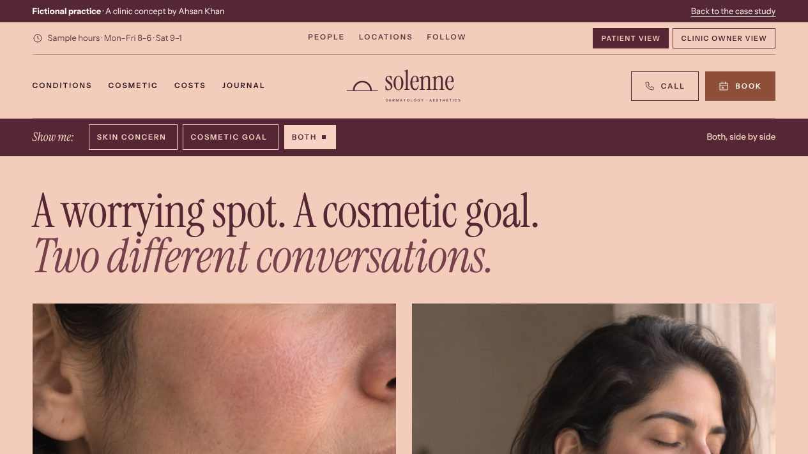
01Write
Two visits, one sales pitch.
“Your best skin” assumes a cosmetic goal. A worrying spot gets lost in it.
The first draft: Reveal your best skin with expert care.
AK · 01Beauty copy can bury medicine.
Then name both conversations.
A worrying spot. A cosmetic goal. Visitors pick a door without diagnosing themselves.
The rewrite: A worrying spot. A cosmetic goal. Two different conversations.
02Design
Give each door equal room.
Grey boxes first. The switch above the headline, two lanes of equal weight below.
AK · 02Neither door gets the bigger sign.
Make it feel like Solenne.
Wine and blush, fine rules and a serif, set like a skin journal.
03Build
Ship the real page.
One of 25 pages, each with the same medical and cosmetic switch.
AK · 03Live. Flip the switch.
One switch, two different pages.
Choose a door. The page re-tints, and the other lane steps back.

- 01Write
- 02Design
- 03Build
I wrote it, designed it and built it.
From the first click to the front desk, you talk to me.
Open the consultation sheet ↗For the curiousThe video, the full kit, every version and how it was checked
- Project
- Independent fictional practice
- Role
- Research, content, brand direction & build
- Deliverable
- 25 pages · 4 social profiles · Medical / cosmetic switch
- Tools
- HTML, CSS & JavaScript · its own static generator
The kit: what Solenne Skin shipped, beyond the pages
Reality checkThe real market, references and rules behind a fictional practice
Modeled on · Austin, TX
Texas expects thousands of new melanoma diagnoses a year, and the Austin area already has large dermatology groups that sell medical, cosmetic and spa care side by side. A concept that keeps a skin concern and a cosmetic goal on separate paths answers a real problem in that market.
- The American Cancer Society estimates 5,910 new cases of melanoma of the skin in Texas in 2026, out of 112,000 nationally (model-based estimates). Source ↗
- Westlake Dermatology & Cosmetic Surgery lists 22 Texas locations across Austin, Houston, Dallas and San Antonio, most of them in the Austin area, offering medical dermatology, cosmetic treatments, plastic surgery and spa services. Source ↗
- Travis County's median household income was $97,013 in 2024 (ACS 1-year estimates), relevant to demand for elective, self-pay cosmetic care. Source ↗
Real
- Forefront Dermatology and Westlake Dermatology as public-site references (no affiliation)
- American Cancer Society and Census figures above
- Texas Medical Board advertising and delegation rules, the FTC Endorsement Guides and the FTC/HHS tracking warning
- Google's prescription-drug ad policy and the No Surprises Act
- The working website and its two-door structure
Invented
- The name Solenne Skin and its brand identity
- The Garden Practice and City Rooms location concepts
- The medical, cosmetic and care-coordinator teams
- Service scope and the split between medical and cosmetic scheduling queues
- The visit planner, social profiles and campaign concepts
- AI-generated portraits and interiors
Real providers reviewed References, not clients
- Forefront Dermatology ↗What their site does: Its services directory spans medical conditions, skin cancer, cosmetic treatments and plastic surgery, and its insurance pages explain that network status depends on the clinic and provider.What this concept does: Solenne puts the medical and cosmetic paths on the first screen as two separate doors, each with its own preparation and cost questions.
- Westlake Dermatology & Cosmetic Surgery ↗What their site does: An Austin-based group whose menus separate Dermatology, Cosmetic, Spa Treatments and Hair; it links a before-and-after photo gallery and lets visitors book online by location, provider and visit type, including medical, cosmetic and virtual visits.What this concept does: Solenne has no photo gallery, brand-name treatments or specials. Its cosmetic route stops at a consultation with a written estimate and time to decide.
Rules the marketing has to follow
| Rule | What it requires | On this site |
|---|---|---|
| Texas rules for delegated cosmetic procedures ↗ | Texas Medical Board rules treat non-surgical cosmetic procedures such as injections as medical acts. A delegating physician must be trained in the procedure, keep written protocols and records, and have a physician, PA or APRN immediately available for an emergency consult. The physician's name, license number and complaint information must be posted, and staff must wear ID showing their credentials. | The cosmetic route is a consultation only; the page says "This demo does not offer procedures." Would need: named supervising physicians, posted license and complaint notices, and supervision disclosures in any ad for a location other than the physician's main practice. |
| Texas Medical Board advertising rule ↗ | Physician advertising in Texas must not be false or misleading. 22 TAC §164.3 (amended effective January 9, 2025) bars "board eligible"-style wording that suggests board certification, testimonials without a credentials disclaimer and disclosure of any payment, unsubstantiated claims of unique skill, deceptive fee or "free" claims, and showing models or actors without saying they are not patients. | No testimonials or results claims. The footer labels all imagery as AI-generated with no real patients or staff, and the team page describes roles, not people. Would need: labels on any future model photography, and substantiation for any skill or technology claim. |
| FTC Endorsement Guides: typical results ↗ | If an ad features someone's results and the advertiser cannot show those results are typical, the ad must clearly say what people can generally expect. Endorsements must reflect honest opinions, and material connections (free treatment, employment) must be disclosed clearly. The Guides were revised in 2023. | There are no before-and-after photos or patient stories. The cosmetic planner asks about risks, limits and maintenance and says it has no countdown, discount or pressure. Would need: a typical-results disclosure and documented consent for any future result photos. |
| Google Ads: prescription drug terms ↗ | Google restricts prescription drug terms in ads, landing pages and keywords. Many cosmetic injectables are prescription drugs, so pages that name them can limit how ads run. | No page names a drug or brand of injectable. Would need: a check of Google's rules before any landing page names a prescription product. |
| No Surprises Act good-faith estimate ↗ | Uninsured patients, and patients choosing not to use insurance, are owed a written good-faith estimate of expected charges: within 1 business day when care is booked 3–9 business days ahead, within 3 business days when booked 10 or more days ahead or when they ask. | The cosmetic consultation page and planner tell patients to request a written estimate and take time to decide; the costs page covers self-pay questions. Would need: a written good-faith estimate for every scheduled self-pay treatment and the federal notice on the site. |
| Health data outside HIPAA (FTC) ↗ | The FTC and HHS have warned that tracking tools such as the Meta pixel and Google Analytics can leak health data, and that companies not covered by HIPAA must still prevent unauthorized disclosure under the FTC Act. A cash-only cosmetic service may sit outside HIPAA, so this matters for its marketing tools. | No tracking or ad tags, and no fields for photos or health history; the medical page says the demo accepts no photos or health information. Would need: the same no-tracking rule on any booking, photo-upload or consultation pages. |
| ADA Title III web accessibility ↗ | DOJ guidance says the ADA covers the web services of businesses open to the public, naming hospitals and medical offices. There is no Title III technical regulation; DOJ points to WCAG and Section 508 as helpful standards. | Every page declares its language, has a skip link and gives every image alt text. No formal WCAG audit has been run. Would need: an audit before launch, including image-heavy cosmetic pages. |
Sources checked October 2026. This is a summary for a portfolio, not legal advice; a real clinic would confirm its obligations with counsel.
Measured qualityLighthouse and axe, run October 30, 2026
- 94Performance
- 100Accessibility
- 100Best practices
- 8/9SEO checks
- Accessibility issues (axe, WCAG 2.1 AA)
- 0
- across 6 pages
- Homepage weight
- 460 KB
- everything a first visit downloads
- Largest content painted
- 3.0 s
- simulated mid-range phone, slow 4G
- Layout shift
- 0.001
- 0.1 or less counts as good
Homepage measured with Lighthouse 12 (mobile) on /sites/solenne/, served locally without compression, so live numbers should be at least this good. The one SEO check that fails is “page can be indexed”: demos are kept out of search on purpose because they’re fictional. Rerun with scripts/kit/measure-quality.mjs.
Screens8 desktop · 2 phone
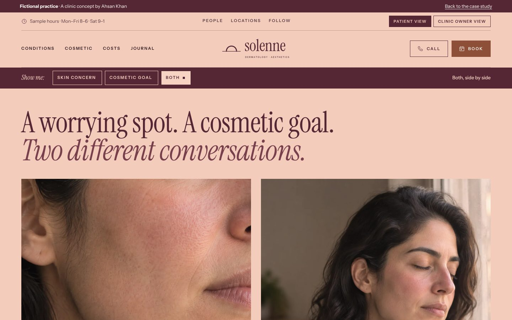
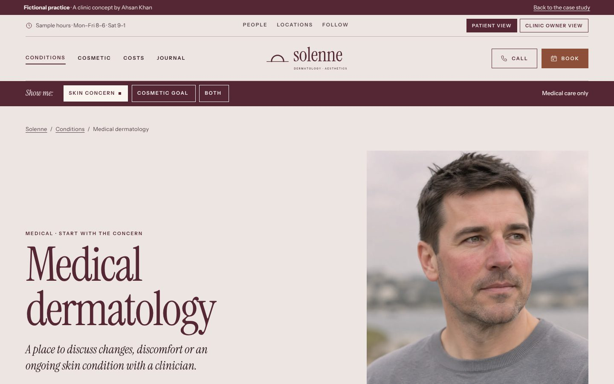
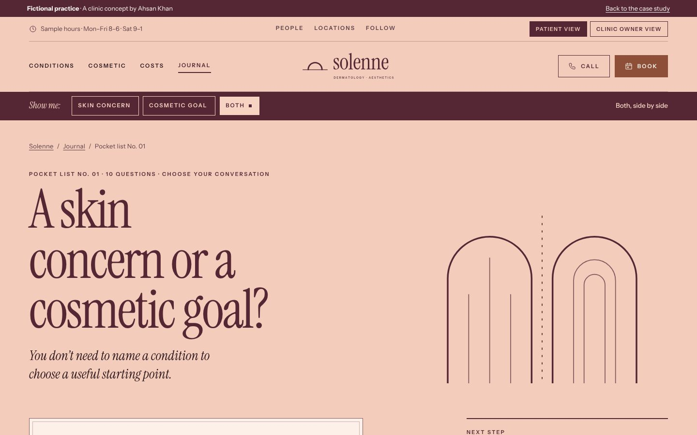
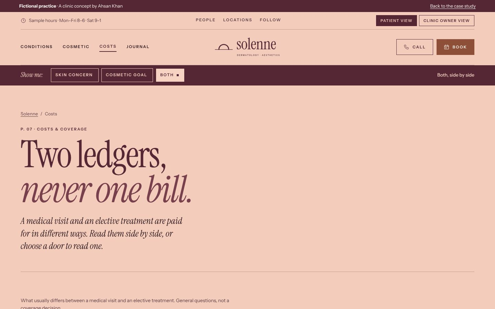
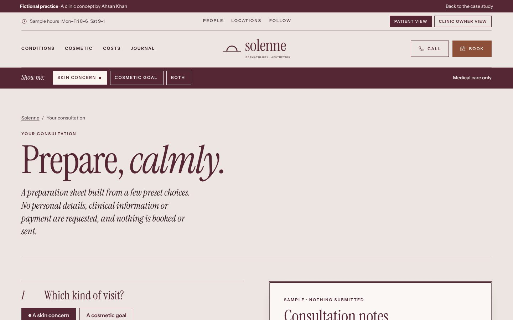
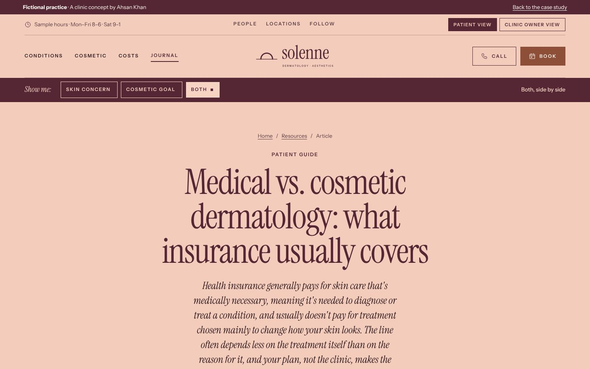
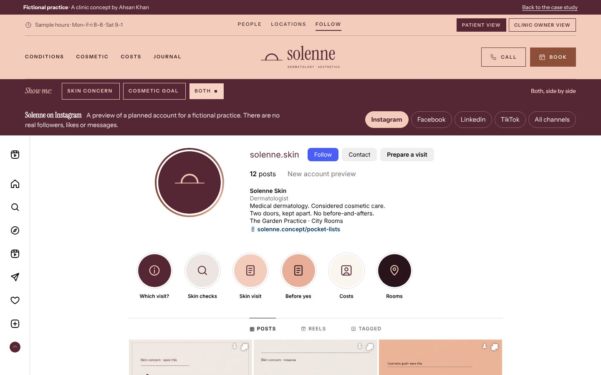
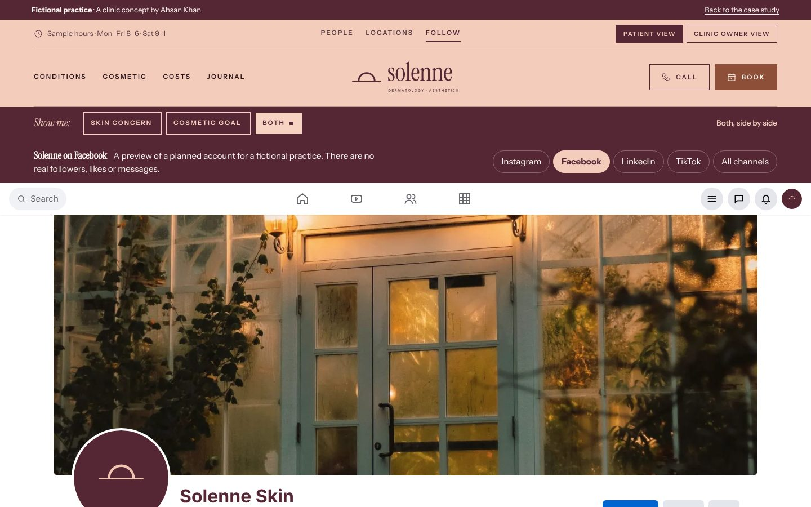
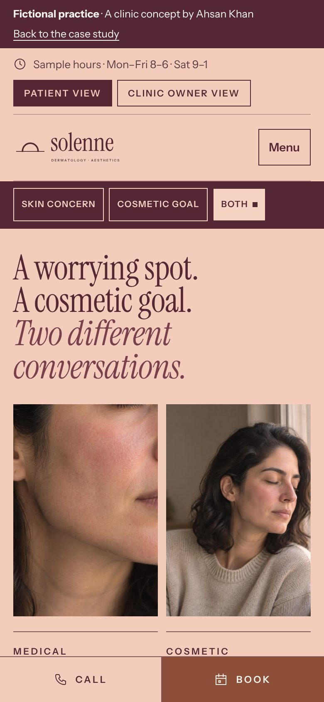
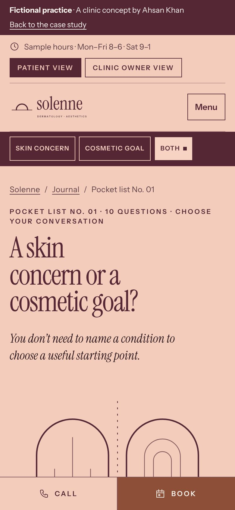
Captured from the live demo on this site. Each screen opens its page in a new tab.
Process documentsBrief · sitemap · homepage outline · keyword map
The problem
Beauty-led messaging can bury medical care, while clinical menus leave cosmetic decisions unexplained.
Goals
- Give a medical concern and a cosmetic goal their own route from the first screen.
- Let a medical visitor reach care without passing through cosmetic messaging.
- Show risks, alternatives and the written estimate for cosmetic treatment, with no countdowns or discounts.
- Carry each social post into a relevant guide, care page and the sample visit planner.
Questions the site must answer
- Is my question a medical concern or a cosmetic goal, and where do I start?
- What happens at a skin-check visit?
- Will I need a biopsy?
- Can I send a photo for a diagnosis?
- Does a cosmetic consultation mean treatment that day?
Keyword map
| Topic | Targets | Intent | Page |
|---|---|---|---|
| Medical dermatology | medical dermatologist appointment · dermatologist for a skin condition · new dermatology patient | commercial | medical-dermatology.html |
| Skin-check visits | skin check appointment · full-body skin exam · mole check dermatologist | commercial | skin-checks.html |
| Medical or cosmetic: choosing a route | medical vs cosmetic dermatology · difference between medical and cosmetic dermatologist · which dermatologist should I see | informational | guide-two-doors.html |
| Preparing for a dermatology visit | what to bring to a dermatologist appointment · first dermatology appointment · preparing for a dermatologist visit | informational | guide-skin-visit.html |
| Cosmetic consultation | cosmetic dermatology consultation · cosmetic dermatologist consultation · cosmetic consultation cost | commercial | cosmetic-consultation.html |
| Considering a cosmetic treatment | questions to ask before cosmetic treatment · cosmetic treatment risks and downtime · cosmetic procedure written estimate | informational | guide-considered-choice.html |
| Ongoing care and follow-up | dermatology follow-up appointment · skin care plan review · dermatologist follow-up questions | commercial | ongoing-skin-care.html |
| Costs and coverage | does insurance cover dermatology · is a skin check covered by insurance · cosmetic dermatology cost estimate | commercial | costs.html |
| Local discovery | dermatologist near me · skin check near me · dermatology clinic Austin | local | locations.html |
| Medical vs. cosmetic dermatology: what insurance usually covers | medical vs cosmetic dermatology · does insurance cover dermatology · does insurance cover cosmetic dermatology | commercial | medical-vs-cosmetic-dermatology-insurance.html |
Keyword targets are proposals from patient-question research; search volumes were not measured.
Flagship article952 words · 8 sources
Search result preview Mockup
solenneskin.example › medical-vs-cosmetic-dermatology-insurance
Medical vs. Cosmetic Dermatology: What Insurance Covers
Insurance usually pays for medically necessary skin care, not cosmetic treatment. See where the line falls, the gray areas and what to ask before booking.
- Target
- medical vs cosmetic dermatology
- Also covers
- does insurance cover dermatology · does insurance cover cosmetic dermatology · medically necessary dermatology · good faith estimate cosmetic procedure
- Intent
- commercial: the reader is about to book a dermatology visit or treatment and wants to know whether insurance is likely to pay and what to ask before committing.
- Review
- Written by Ahsan Khan. The practice is fictional. In client work, your clinician reviews and approves every article before it is published.
The 8 sources
- Medically necessary (HealthCare.gov Glossary)
- Excluded services (HealthCare.gov Glossary)
- Preauthorization (HealthCare.gov Glossary)
- Cosmetic surgery coverage (Medicare.gov)
- What to look for: ABCDEs of melanoma (American Academy of Dermatology)
- Hyperhidrosis: Treatment (American Academy of Dermatology)
- Good faith estimate (CMS Medical Bill Rights)
- When to use the emergency room - adult (MedlinePlus, U.S. National Library of Medicine)
Read “Medical vs. cosmetic dermatology: what insurance usually covers”
Search volumes were not measured, so none are claimed.
Ad packGoogle search · Facebook & Instagram · policy notes
Search ad preview Mockup
Sponsored · solenneskin.example/index
Solenne Skin | Dermatology in Austin | Medical + Cosmetic Derm
A skin concern and a cosmetic goal are different visits. Solenne keeps a door for each.
Campaign: Solenne | Search | Medical + Cosmetic Derm | Austin (sample). Final page: index.html.
All 15 headlines 30 characters max
- Solenne Skin12
- Dermatology in Austin21
- Medical + Cosmetic Derm23
- Bring Your Skin Questions25
- Skin-Check Visits17
- Medical Dermatology19
- Cosmetic Consultations22
- Explore Without Committing26
- Two Doors, Two Conversations28
- Ask About Downtime First24
- Written Estimates on Request28
- No Countdown Offers19
- A Clearer Next Step19
- Time to Decide14
- Plan a Skin Visit17
Descriptions 90 max
- A skin concern and a cosmetic goal are different visits. Solenne keeps a door for each.87
- Prepare for a skin-check visit: what to bring and how results reach you afterward.82
- Cosmetic consultations cover options, risks, recovery and a written estimate first.83
- Unsure where to start? Ask our care team to route you. No need to name a condition.83
Keywords
"dermatologist austin" · [dermatology clinic austin] · "medical dermatology austin" · "skin check austin" · "mole check austin" · "full body skin exam austin" · "cosmetic dermatology austin" · "cosmetic consultation dermatologist" · [dermatologist near me] · "new dermatologist austin"
Negative keywords
jobs · esthetician school · salary · diy · home remedies · skincare products · coupon
Facebook & Instagram ads Mockups
How these ads stay within the rules
| Rule | How it’s handled |
|---|---|
| No implied personal attributes ↗ | Copy describes the clinic, never the reader. No "you" + condition lines such as "Worried about that mole?" or "Tired of breakouts?"; copy offers "a skin concern" as a door, not a label. |
| No before/after or appearance promises ↗ | No before/after images and no "flawless" or "younger" claims. The hero is an AI-generated portrait with natural skin texture, labelled on site as not a patient or result. |
| Prescription drug terms ↗ | No brand or generic prescription injectable names in ads, keywords or the landing copy, since Google restricts these terms to certified advertisers. |
| Health is a sensitive targeting category ↗ | Search campaigns run on keywords and location only. No remarketing, Customer Match or custom segments built from dermatology or cosmetic page visitors. |
| No fear, false urgency or improbable results ↗ | No countdowns, "today only" lines, or illness-based fear. No discount or "this week only" offers, and no prices, because the site lists none. The guide CTA is a free question list. |
| Sensitive detailed targeting is gone ↗ | Meta audiences use location and age only. No health-cause, condition or life-event interests, even where a similar option still appears. No beauty, skincare or skin-condition interests. |
Written for a fictional practice; nothing here has run or been measured. Every character limit was checked by script.
Local SEO & reviewsGoogle Business Profile · review requests · safe replies
Business Profile Mockup
Solenne Skin
Dermatologist · Skin care clinic · Medical clinic
Solenne Skin offers medical dermatology and considered cosmetic care, with a separate path for each, at The Garden Practice and City Rooms. Bring a skin concern, a change you have noticed or an ongoing condition, and a clinician will examine it and talk through next steps. If you are exploring an optional cosmetic treatment, a consultation covers your goal, suitability, risks, recovery and a written estimate, with time to decide. You do not need to name a condition to start. If you are unsure which visit fits, ask our care coordinator to route you. Please share photos or health details only through our approved clinical channels, never in reviews or messages here.
Services
- Medical dermatology. An individual evaluation for a skin change, discomfort or ongoing condition. Bring a list of your current products and medications and notes on what you have noticed.
- Skin-check visits. A visit to discuss a skin change or a recommended skin examination. Ask what the exam involves and how any results will be shared with you.
- Cosmetic consultation. Explore an optional treatment goal. We discuss suitability, risks, alternatives, recovery and maintenance, and provide a written estimate. A consultation is not treatment that day.
- Ongoing skin care reviews. A follow-up to review how an existing clinician-led plan fits your routine, discuss any new concerns and agree when to check in again.
Posts
- Update
A skin concern or a cosmetic goal? They are different conversations, and you do not need to name a condition to choose a door. Our two-doors guide helps you pick a starting point.
Button: Learn more - Update
Before you say yes to any cosmetic treatment, ask about options, risks, downtime, maintenance and a written estimate. Our consultation planner lists the questions. No countdown, no discount.
Button: Learn more - Event
Sample event: an evening talk at City Rooms on preparing for a skin-check visit. General questions only; please keep personal health details for a private appointment.
Button: Learn more
Questions & answers
- Can I send a photo for a diagnosis?
- Please do not post photos or health details here. Call us and we will explain our approved clinical route and whether an in-person visit is needed.
- Does a cosmetic consultation mean treatment the same day?
- No. A consultation is for discussing options, risks and a written estimate. Any treatment is a separate decision and appointment.
- Will my plan cover a visit?
- Medical and cosmetic care are handled differently. Call with the visit type and your plan details and we will explain what to check.
Asking for reviews: every patient, the same way
- Ask every patient with a completed visit. No screening by satisfaction score first (no review gating).
- No incentives of any kind for a review: no discounts, gifts, raffles or credits.
- Follow FTC rules: no fake, bought or staff-written reviews, and no pressure to remove a negative one.
- Never confirm or deny in a public reply that someone is a patient.
- No PHI anywhere: requests and replies name no visit type, clinician, date or condition.
- Never ask for or reply to photos of skin. Cosmetic and medical patients receive the same message.
When: One email 48 hours after every completed medical or cosmetic visit, one opt-in SMS reminder 5 days later, then stop. The same message goes to both medical and cosmetic patients so the request never reveals which door someone used.
Subject: Your thoughts on Solenne
Hello, Thank you for visiting Solenne Skin. If you are willing, we would value an honest review of your experience, whether it was good or could have been better. It helps others choose a practice and helps us improve. Leave a review: [Google review link] Please do not include photos of your skin or any health details. For questions about your care, call us at [main number]. With thanks, The Solenne team
Text message
Solenne Skin: an honest review helps others choose a practice: [short link]. Please no photos or health details. Reply STOP to opt out.
Reply to a positive review
Thank you for sharing this. We are grateful you took the time, and we will pass it on to the whole team. — The Solenne team
Reply to a negative review
Thank you for this feedback. We would like to understand more, but privacy rules mean we cannot discuss any details in a public reply. Please call our care coordinator, [Name], at [main number] so we can talk privately. — [Name], Solenne Skin
Neither reply confirms that the reviewer is a patient.
The receipts
The brief
Beauty-led messaging can bury medical care; clinical menus can leave cosmetic decisions unexplained.
The intended audience: People seeking an evaluation for a skin concern and adults researching an optional cosmetic treatment. Reviewing the public Forefront Dermatology website suggested a useful structural lesson: keep medical and cosmetic care visible as distinct entry points. I used that observation to develop an independent brand and a complete patient-facing concept. The questions below are design hypotheses, not interview findings.
- 01A medical concern and an elective appearance goal should never be flattened into the same sales pitch.
- 02Make visit preparation and cost questions visible before a request
- 03Carry useful social offers into relevant service and visit routes
- 04Show operational ownership without presenting a working clinical integration
All 3 versionsFrom reference pattern to an independent concept.
These are the stages of this original build, not a claimed redesign history for the reference organization.
Identify the visitor’s decision
Forefront Dermatology provided a public reference for keep medical and cosmetic care visible as distinct entry points. No private operations or patient transactions were audited.
Build around the care conversation
“Your skin. Your questions. A clearer next step.”
Set as one issue of a skin journal: Bodoni Moda display type, Instrument Sans and Newsreader, wine and blush on cream, fine rules, asymmetric magazine grids and issue numbering. Medical and cosmetic care are two arched doors of equal weight, a ruled arch and a concentric arch, and that motif runs through the guides, posts and room plans.
Connect content to a sample handoff
Service pages, three campaign offers, four social profiles and a synthetic visit planner make the proposal inspectable.
Palette & typeOne brand, carried into each channel.
Set as one issue of a skin journal: Bodoni Moda display type, Instrument Sans and Newsreader, wine and blush on cream, fine rules, asymmetric magazine grids and issue numbering. Medical and cosmetic care are two arched doors of equal weight, a ruled arch and a concentric arch, and that motif runs through the guides, posts and room plans.
#F6E3DAThe colour the site is known by#552735Type, navigation and primary actions#783F4CLinks, signature feature and highlights#F1C5B0Bands, chips and supporting panelsThe signature feature first
A worrying spot and a cosmetic goal are different visits with different costs. A switch on every page shows one, the other, or both side by side.
A distinct social role
Each channel is built like the real platform page, with real posts kept apart by door: an Instagram grid of Canva carousels in the skin-journal style (a spot that’s changed, a winter rosacea flare, five questions before a cosmetic yes) between photos of the rooms; a Facebook Page led by “which appointment do I ask for?”; a LinkedIn company page with a document post on who calls the patient with a result; and TikTok captioned storyboards that start with a changed spot.
A useful mobile path
The same signature feature, guides and planner, laid out for a phone rather than shrunk onto it.
Build & checksA working concept from the first post to the next owner.
Solenne Skin has its own generator, layout, type and interactions, so it doesn’t read as a template of the other practices. Interaction state stays in the current page.
- Static HTML, CSS and JavaScript
- Astro portfolio case study
- Local font files and optimized WebP imagery
What it does
- A medical/cosmetic switch carried across every page
- A two-column cost ledger that collapses to one door
- A consultation sheet that starts from the chosen door
- A patient view and a clinic-owner view, with a note on what each part does for the clinic
- Three downloadable guides, and social previews that lead to them
How it was checked
- Generated route and asset validation
- Portfolio type and build checks
- Responsive browser review and interaction checks
What I built, and what an operating practice would bring
This project
- Original identity, copy, information architecture and visual direction
- A 25-page practice website with four detailed care pages and a flagship article
- Instagram, Facebook, LinkedIn and TikTok previews
- Three downloadable question packs and a synthetic visit planner
Before a real launch
- Verified clinicians, credentials, locations, access and availability
- Clinical review and approved patient communication
- Actual fees, benefit policies and service eligibility
- System access, security, consent and integration requirements
The working website is evidence of design and implementation. The care operations model remains proposed.
What a real implementation would need to prove
The next phase would test comprehension and operational fit with the practice before connecting systems or running a campaign.
Review with patients and staff
Can a visitor choose medical dermatology without passing through cosmetic messaging, and can a cosmetic visitor find risks, alternatives and estimate questions?
Agree the operational states
A cosmetic consultation does not authorize a procedure. The proposed workflow pauses for clinical suitability, informed choice and a written estimate.
Measure the right result
Compare route-specific guide use, qualified consultation requests and staff-reported mismatches after a clinically reviewed launch. No treatment-result metric is claimed.
Ahsan Khan — research synthesis, content, brand direction and implementation. AI-generated illustrative imagery; no real clinicians or patients depicted.
Reference: Forefront Dermatology (https://forefrontdermatology.com/). No affiliation or commissioned relationship. Research notes and image provenance are retained with the project source.